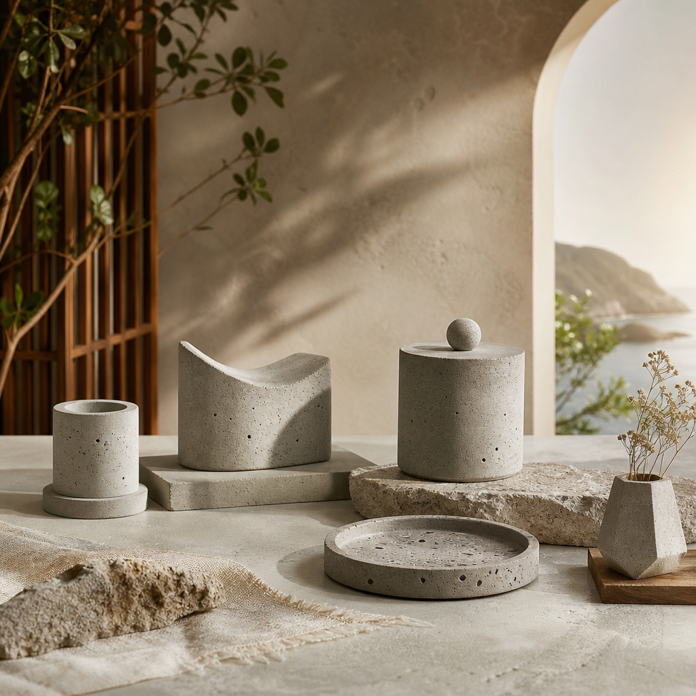
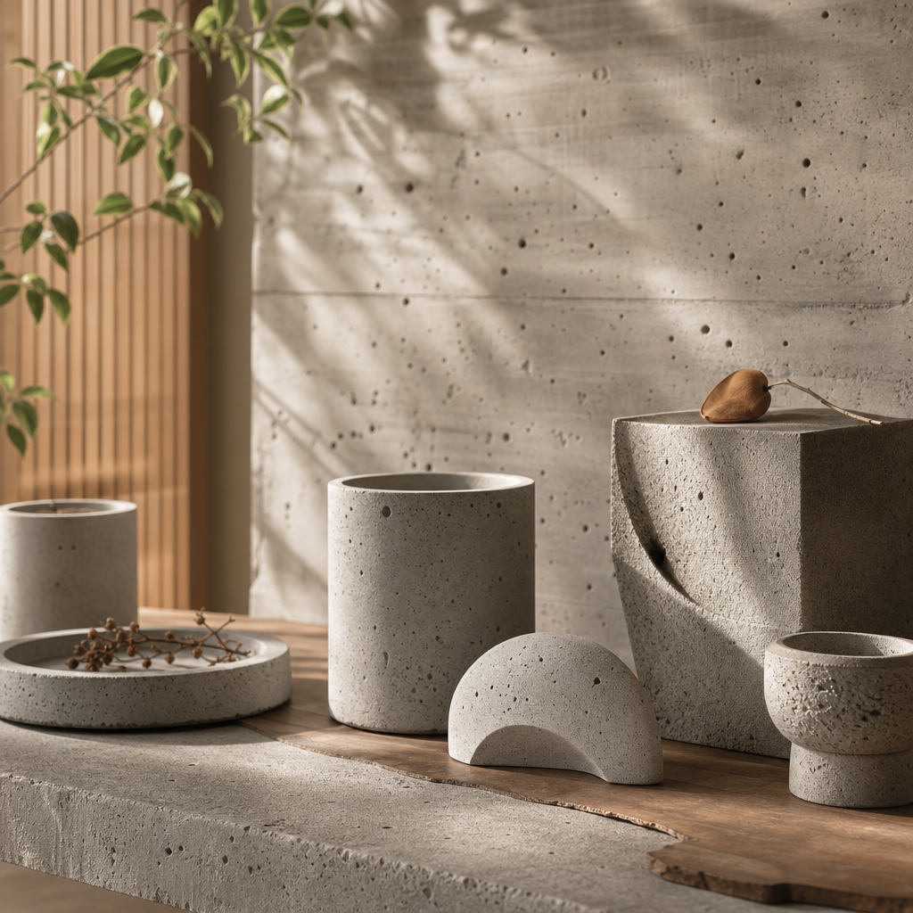

社區行動
【摘要】Concredia.Lab 官網正式開放，帶來混凝土工藝品和 ESG 永續設計理念的新體驗。這個平台不僅展示我們的作品，也邀請您一起探索工藝精神和永續生活的世界。通過這個新平台，我們希望能夠與您建立更緊密的聯繫，分享我們的熱忱和堅持。
【標籤】混凝土工藝、ESG設計、永續生活、台灣製造、工藝品
【內文】
今天是個值得紀念的日子，因為我們的官網正式開放了！這不僅是個里程碑，也是對於我們一直堅持的 ESG 永續設計和混凝土工藝品的見證。從今天起，您可以在我們的官網上找到最新的作品，了解我們的設計理念，並體驗真實有溫度的工藝精神。在這個旅程中，我們希望您能夠感受到我們對於工藝的熱忱，和對於永續生活的堅持。
Concredia.Lab 致力於創造真實有溫度的混凝土工藝品，結合 ESG 永續設計和循環材料，為每個空間帶來獨特的氣息。透過我們的網站，您可以瀏覽我們的作品，了解我們的設計理念，並直接購買您喜歡的作品。無論您是工藝品的愛好者，還是對於永續生活有興趣的人，我們都希望能夠與您分享我們的理念和作品。
我們的混凝土工藝品不僅是美麗的裝飾，也是對於工藝精神的見證。每一件作品都經過精心設計和製作，注入了我們對於工藝的熱忱和對於永續生活的堅持。從選擇材料到完成作品的每一個步驟，都經過了我們的精心考慮和設計。透過我們的作品，我們希望能夠帶給您一個更加美好的空間，讓您感受到工藝的溫度和永續生活的價值。
除了作品展示之外，我們的官網還提供了許多有趣的功能和資訊。您可以瀏覽我們的設計理念，了解我們的 ESG 永續設計和循環材料的使用。您也可以分享您對於混凝土工藝品的想法和建議，讓我們一起創造一個更加美好的空間。透過這個平台，我們希望能夠與您建立更緊密的聯繫，分享我們的熱忱和堅持。
讓我們一起探索混凝土工藝品的世界，創造一個更加美好的空間。無論您是工藝品的愛好者，還是對於永續生活有興趣的人，我們都希望能夠與您分享我們的理念和作品。透過我們的官網，我們相信能夠帶給您一個新的體驗，讓您感受到工藝的溫度和永續生活的價值。今天，讓我們一起開始這個新的旅程，創造一個更加美好的未來。
官網開放消息
Concredia.Lab 官網正式開放，帶來混凝土工藝品和 ESG 永續設計理念的新體驗。這個平台不僅展示我們的作品，也邀請您一起探索工藝精神和永續生活的世界。通過這個新平台，我們希望能夠與您建立更緊密的聯繫，分享我們的熱忱和堅持。
【標籤】混凝土工藝、ESG設計、永續生活、台灣製造、工藝品
【內文】
今天是個值得紀念的日子，因為我們的官網正式開放了！這不僅是個里程碑，也是對於我們一直堅持的 ESG 永續設計和混凝土工藝品的見證。從今天起，您可以在我們的官網上找到最新的作品，了解我們的設計理念，並體驗真實有溫度的工藝精神。在這個旅程中，我們希望您能夠感受到我們對於工藝的熱忱，和對於永續生活的堅持。
Concredia.Lab 致力於創造真實有溫度的混凝土工藝品，結合 ESG 永續設計和循環材料，為每個空間帶來獨特的氣息。透過我們的網站，您可以瀏覽我們的作品，了解我們的設計理念，並直接購買您喜歡的作品。無論您是工藝品的愛好者，還是對於永續生活有興趣的人，我們都希望能夠與您分享我們的理念和作品。
我們的混凝土工藝品不僅是美麗的裝飾，也是對於工藝精神的見證。每一件作品都經過精心設計和製作，注入了我們對於工藝的熱忱和對於永續生活的堅持。從選擇材料到完成作品的每一個步驟，都經過了我們的精心考慮和設計。透過我們的作品，我們希望能夠帶給您一個更加美好的空間，讓您感受到工藝的溫度和永續生活的價值。
除了作品展示之外，我們的官網還提供了許多有趣的功能和資訊。您可以瀏覽我們的設計理念，了解我們的 ESG 永續設計和循環材料的使用。您也可以分享您對於混凝土工藝品的想法和建議，讓我們一起創造一個更加美好的空間。透過這個平台，我們希望能夠與您建立更緊密的聯繫，分享我們的熱忱和堅持。
讓我們一起探索混凝土工藝品的世界，創造一個更加美好的空間。無論您是工藝品的愛好者，還是對於永續生活有興趣的人，我們都希望能夠與您分享我們的理念和作品。透過我們的官網，我們相信能夠帶給您一個新的體驗，讓您感受到工藝的溫度和永續生活的價值。今天，讓我們一起開始這個新的旅程，創造一個更加美好的未來。
2026 年 6 月
閱讀全文 →

Maker 實錄
混凝土工藝品的誕生過程：Concredia.Lab 的創作日常
本文將帶您進入 Concredia.Lab 的工作室，觀察混凝土工藝品的製作過程。從原材料選擇到最終成品的打造，每一步都需要精心設計和執行。通過這個過程，我們可以看到工匠們對混凝土藝術的熱情和對細節的關注。
2026 年 6 月
閱讀全文 →

Maker 實錄
淺談混擬土
本文將探討混擬土的基本知識，包括其成分、特性和應用。通過了解混擬土的特點，讀者可以更好地運用它們來創造新的作品。同時，本文也會分享一些實用的技巧和注意事項，讓讀者能夠更自信地使用混擬土。
2026 年 6 月
閱讀全文 →

媒體 & 活動
混凝土工藝與現代藝術的交融：Concredia.Lab 在藝術展覽中的表現
Concredia.Lab 近期在一場現代藝術展覽中展出了一件令人驚艷的混凝土工藝品，結合了台灣本土製造和循環材料，呈現出永續美學與工藝價值。這件作品吸引了許多參觀者的目光，引發了對混凝土工藝與現代藝術的深入思考。通過這次展覽，Concredia.Lab 展現了其對於混凝土工藝的創新與實踐。
2026 年 6 月
閱讀全文 →

媒體 & 活動
「永續美學的展現：Concredia.Lab 在現代藝術空間的耀眼登場」
Concredia.Lab 的大型粉紅雕塑在混凝土牆面上展示，展現出品牌對於永續美學和工藝價值的堅持。這件藝術作品不僅呈現出現代藝術的創新風格，也強調了循環材料與台灣本土製造的重要性。通過這次活動，Concredia.Lab 希望傳遞出對於美學和可持續發展的獨特見解。
2026 年 6 月
閱讀全文 →
媒體 & 活動
在藝術的殿堂中，感受永續美學的魅力
最近，我們有幸參加了一場在當地博物館舉辦的藝術展覽，展出的作品包括我們的混凝土工藝品。展覽會上，各式各樣的藝術品在博物館內相互輝映，呈現出一個豐富多彩的藝術世界。這次的活動不僅讓我們的作品得以與更多人分享，也讓我們深刻體會到永續美學的重要性。
2026 年 6 月
閱讀全文 →